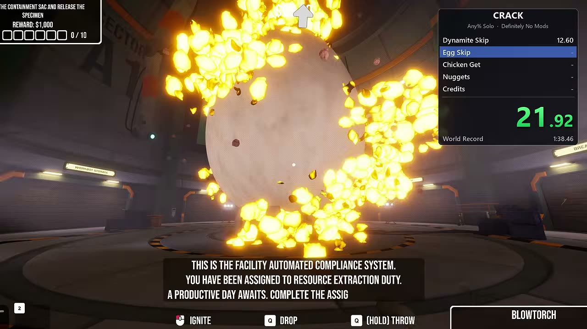
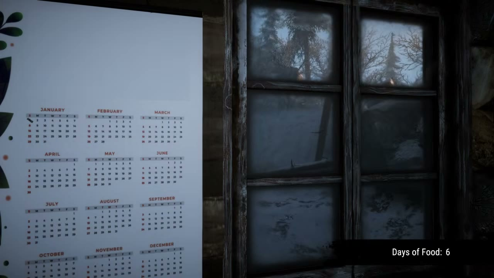
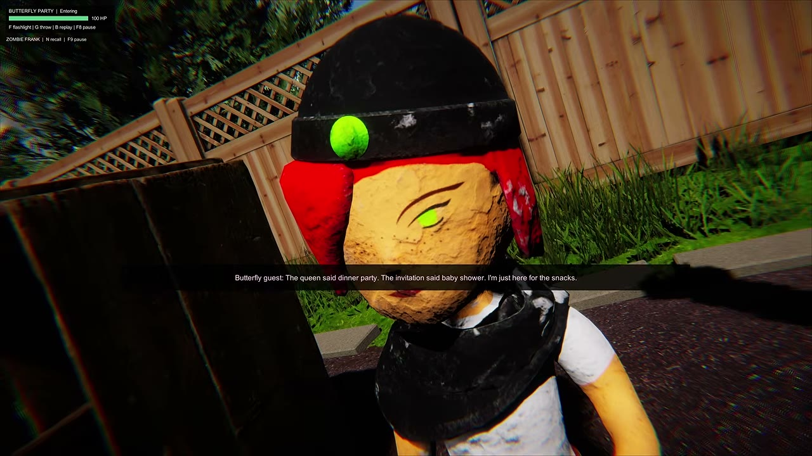
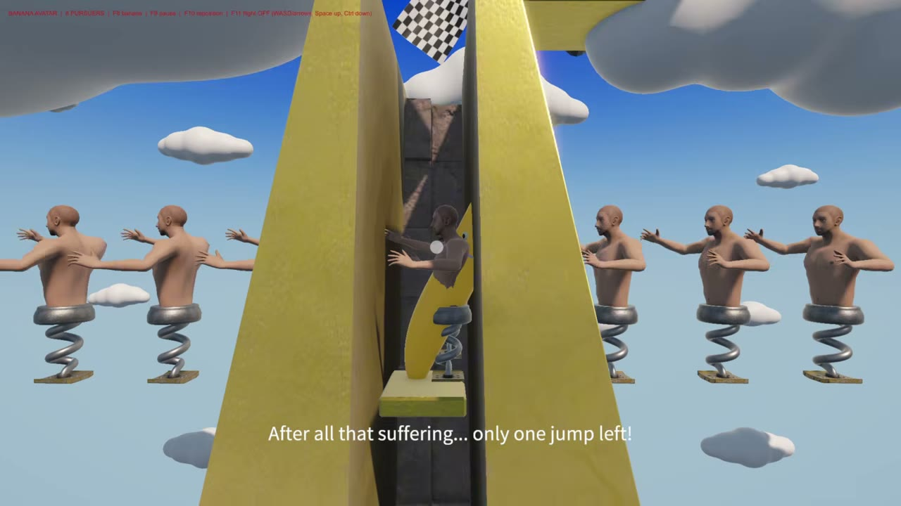
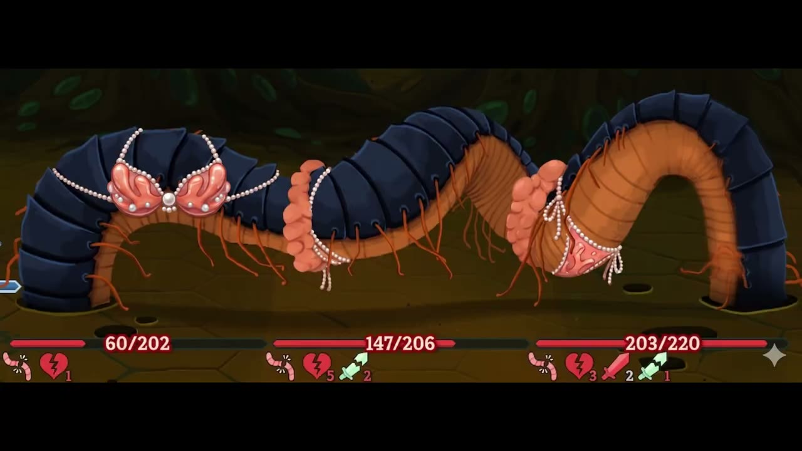
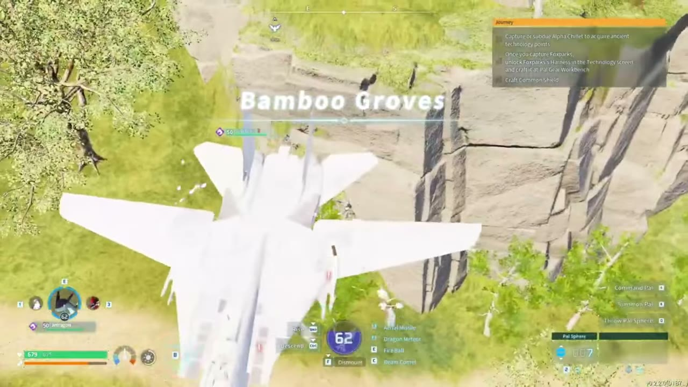
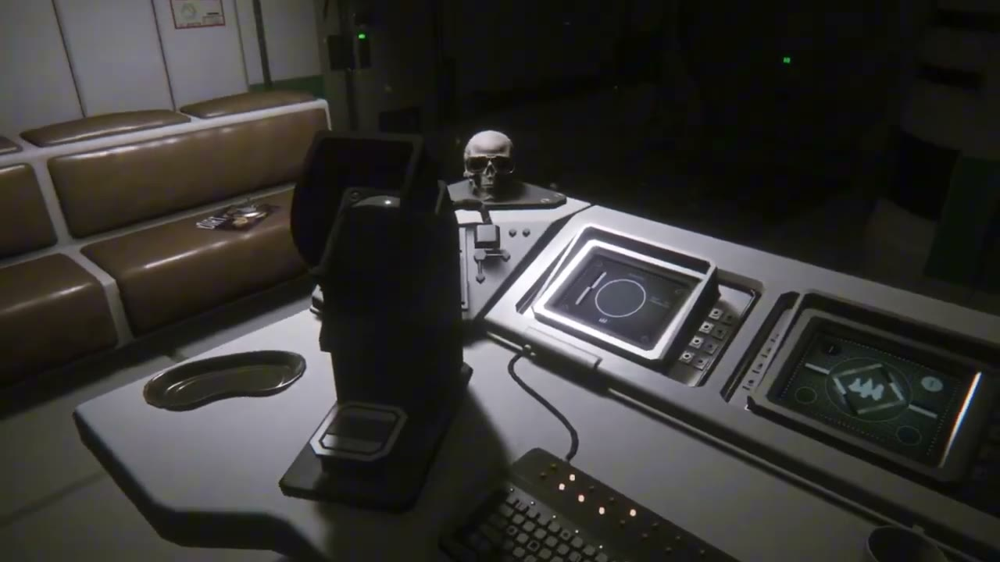
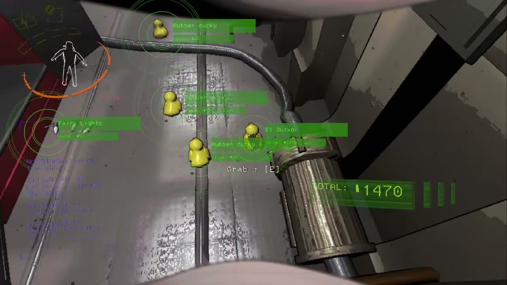
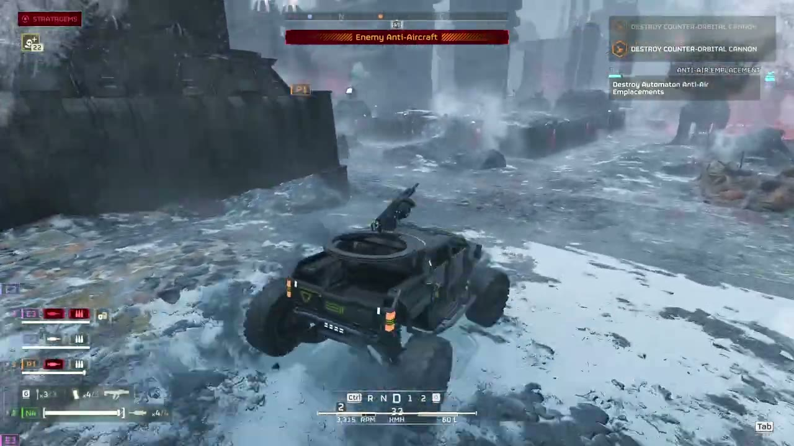

NotAlaska Games: game reviews
Bad gameplay, insane mods. Every review has GIFs and the full video, so you can see the game before you buy it.

CRACK reviewthree-player egg cracking, then a modded speedrun
The Pale Mimic reviewyou hunt, and something hunts you back
Gnome reviewhouse-sitting horror with a garden gnome problem
Spring Me Up reviewa rage platformer, played as a banana
Slay the Spire 2 reviewco-op deckbuilding with AI-redrawn enemies
Palworld reviewmonster catching, survival and an F-14 fighter jet mod
Alien: Isolation reviewsurvival horror, but the Alien is Thomas the Tank Engine
Lethal Company reviewco-op horror, but everyone is a duck
Helldivers 2 reviewco-op chaos, armed with a rat mod Jump Space reviewco-op spaceship crew vs a giant banana mod
Jump Space reviewco-op spaceship crew vs a giant banana mod